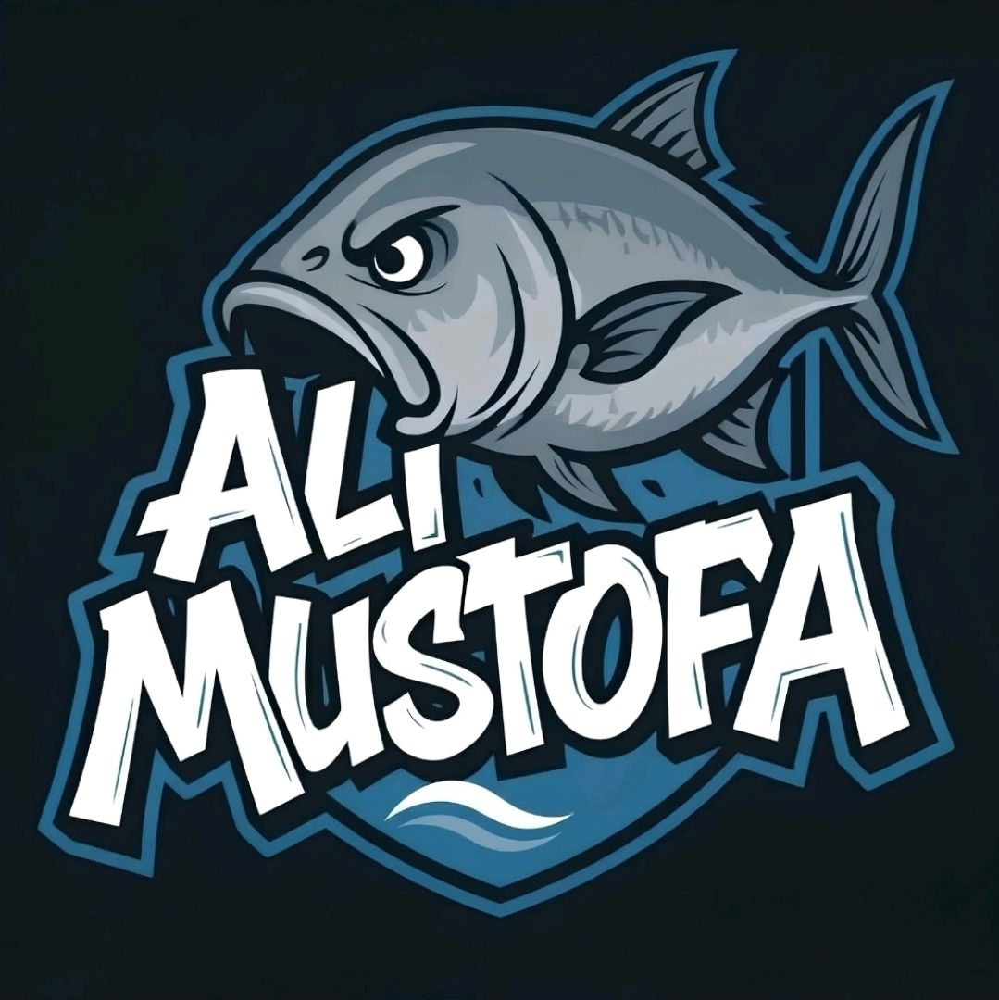
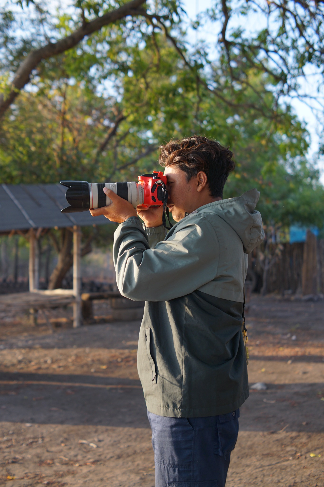
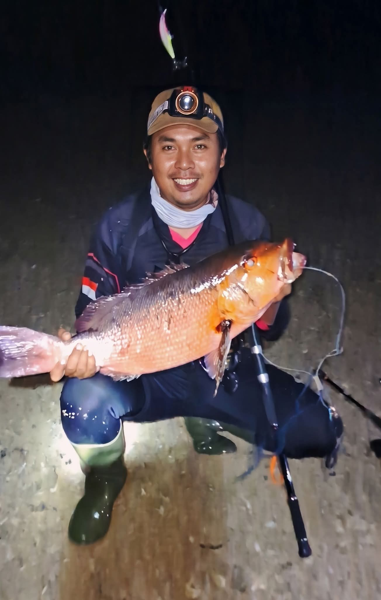
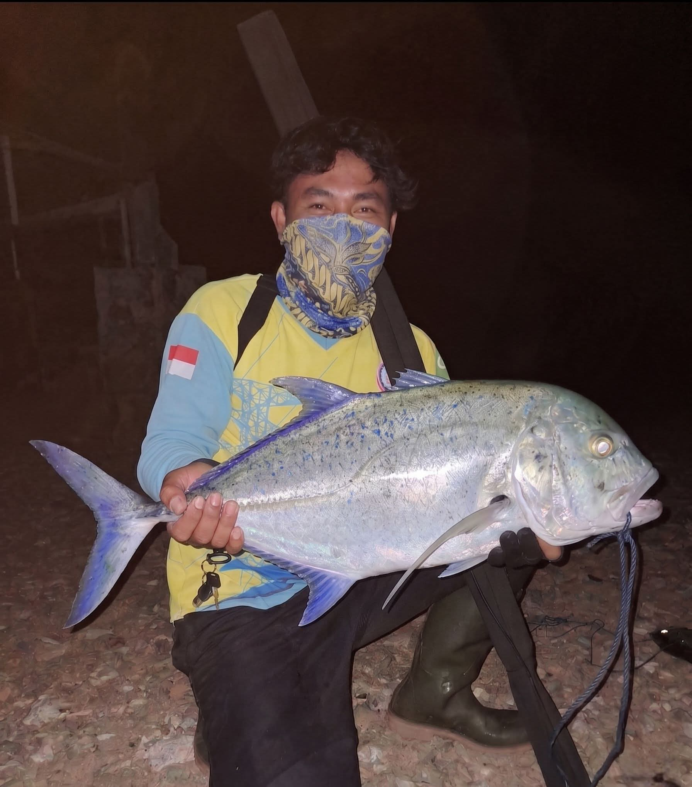
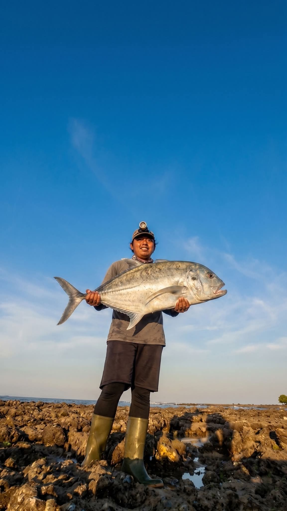

Fishing Adventure
Menjelajahi spot mancing dan menikmati pengalaman di alam terbuka.

ALI MUSTOFA Let's Talk ↗PERSONAL PORTFOLIO
Hello, I'm
Content Creator Fishing — berbagi cerita perjalanan memancing, eksplorasi spot, hasil tangkapan, tips, dan momen seru di alam.

01 / ABOUT ME
“
I'm Ali Mustofa.
Saya adalah content creator yang mengabadikan perjalanan memancing, mengeksplorasi spot-spot menarik, berbagi hasil tangkapan, dan cerita di balik setiap petualangan.
Website ini menjadi rumah digital untuk konten memancing saya: dokumentasi trip, galeri hasil tangkapan, rekomendasi spot, video, serta tips dan pengalaman di dunia fishing.
02 / WHAT I DO
Menjelajahi spot mancing dan menikmati pengalaman di alam terbuka.
Mencoba teknik, umpan, dan perlengkapan untuk berbagai kondisi spot.
Mengabadikan momen strike, hasil tangkapan, dan perjalanan memancing.
Membagikan cerita, video, dan pengalaman memancing kepada komunitas.
03 / SELECTED WORK
Cerita dan aktivitas yang menjadi bagian dari perjalanan memancing.
Menjelajahi spot pantai dan lokasi mancing pilihan.
Mengabadikan momen strike dan hasil tangkapan.
Membagikan cerita petualangan melalui konten digital.
07 / THE CATCH LOG
Beberapa momen hasil tangkapan dari perjalanan memancing Ali Mustofa.

CATCH MOMENT 01
Dokumentasi hasil tangkapan dalam sesi memancing malam.

CATCH MOMENT 02
Momen mendapatkan ikan di area pesisir.

CATCH MOMENT 03
Catatan perjalanan dan pengalaman memancing dari tepi pantai.
Informasi berat, jenis ikan, tanggal, dan titik lokasi dapat ditambahkan setelah data setiap tangkapan dikonfirmasi.
06 / FIND YOUR NEXT CAST
Catatan destinasi pesisir dan referensi lokasi memancing di sekitar Baluran, Situbondo.

SITUBONDO · BANYUPUTIH
Destinasi wisata bahari di Desa Sumberwaru. Pantai ini pernah menjadi lokasi Fishing Camp dan lomba memancing, sehingga menarik untuk masuk daftar eksplorasi pemancing.
Lihat lokasi ↗
KAWASAN BALURAN · SITUBONDO
Pantai di sisi barat kawasan Baluran yang berdekatan dengan Sijile. Jadikan lokasi ini sebagai referensi eksplorasi pesisir dan cek aturan aktivitas kepada pengelola sebelum memancing.
Lihat lokasi ↗Penting: kawasan Taman Nasional Baluran merupakan kawasan konservasi. Tidak semua pantai mengizinkan aktivitas memancing. Pantai Bama bukan rekomendasi spot memancing. Selalu konfirmasi izin, zona yang diperbolehkan, akses, dan kondisi terbaru kepada pengelola sebelum berangkat.
EXPLORE THE AREA
Peta interaktif untuk melihat area Pantai Sijile dan Pantai Bilik. Ketuk peta untuk membuka Google Maps.
04 / WATCH & EXPLORE
Salah satu video pilihan dari akun TikTok Ali Mustofa.
TIKTOK · FEATURED CLIP
Tonton video ini langsung di website atau buka TikTok untuk melihat konten lainnya.
07 / MOMENTS
Dokumentasi perjalanan memancing dan momen hasil tangkapan.
08 / GET IN TOUCH
Punya ide, pertanyaan, atau ingin berkenalan? Silakan hubungi saya.
Follow on TikTok ↗ Follow on Facebook ↗Ikuti akun TikTok @ali.mustofa93 untuk melihat video dan aktivitas memancing terbaru.